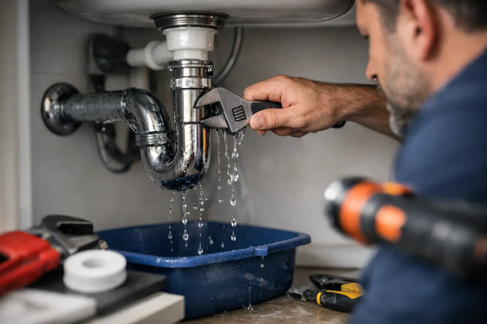

Small Plumbing Repairs That Cannot Wait
By Vitalii Nestorenko · July 22, 2026 · 6 min read
A drip under the sink may look minor until it swells the cabinet floor, damages stored items, or creates a musty smell. Small plumbing repairs are often the jobs homeowners put off because the water is still running and the fixture still works. The trouble is that small leaks, loose fittings, worn seals, and running toilets rarely improve on their own.
The good news is that many everyday plumbing issues can be fixed quickly when they are caught early. Knowing what you can safely check, what needs prompt attention, and when to bring in help can save time, water, and a much larger repair bill.
Small Plumbing Repairs Worth Handling Quickly
Not every plumbing problem is an emergency, but a repair becomes more urgent when water can reach flooring, cabinets, drywall, or electrical fixtures. A slow leak can be just as costly as a sudden one if it stays hidden for weeks.
A faucet that drips after it is turned off is a common example. The cause may be a worn cartridge, washer, O-ring, or valve seat, depending on the faucet type. Replacing the right part can stop the drip, but forcing unfamiliar parts or overtightening connections can crack a fixture or create a new leak. If the faucet is old, corroded, or difficult to take apart, replacement can be the better value.
A running toilet is another job that deserves attention. You may hear water refilling the tank every few minutes, see water moving in the bowl, or notice an unexpected increase in your water bill. Often, the issue is a worn flapper, an incorrect chain length, or a fill valve that is no longer shutting off properly. These are usually straightforward repairs, but they need the correct adjustment and replacement part for the toilet.
Leaks beneath bathroom or kitchen sinks also need a closer look. Sometimes the fix is as simple as tightening a slip-joint nut by hand. Other times, a cracked drain fitting, failed P-trap washer, loose supply line, or deteriorated shutoff valve is responsible. If you see staining, soft cabinet material, or moisture returning after you dry the area, do not treat it as a one-time spill.
First Steps When You Find a Leak
Your first job is to limit water damage, not diagnose every part immediately. Clear the area under the sink or around the toilet, place a towel or shallow container under the leak, and dry the fittings so you can see where fresh water appears.
For a faucet, toilet, or sink leak, locate the nearby shutoff valve. Most sinks and toilets have one or two valves beneath or behind the fixture. Turn the valve clockwise gently. If it will not move easily, do not force it. Older valves can seize or fail when disturbed.
If water is flowing quickly, a pipe has burst, or you cannot isolate the fixture, turn off the main water supply to the home. Every household should know where this valve is before a problem happens. In many homes, it is near the water meter or where the main line enters the building.
Take a few clear photos before removing anything. They help identify the fixture, show the source of the problem, and make reassembly easier if you are doing a basic repair yourself. They are also useful if you need a professional to assess the work quickly.
When a DIY Fix Makes Sense
A homeowner can often handle a simple repair when the issue is visible, the water is fully shut off, and the correct replacement part is easy to identify. Replacing a toilet flapper, changing an accessible faucet aerator, or tightening a loose cabinet-mounted drain connection may be reasonable tasks for someone comfortable with basic tools.
The key is to stay within the repair itself. A faucet aerator clogged with mineral buildup can be removed, cleaned, and reinstalled. A flapper can be matched to the old part and tested by flushing the toilet several times. These jobs do not require opening walls, changing water lines, or altering drain piping.
DIY becomes less sensible when the problem is unclear. For example, a toilet that rocks may need new bolts, but it may also have a damaged wax seal, uneven flooring, or a flange issue. Tightening the bolts too aggressively can crack the porcelain. Similarly, adding more tape or sealant to a leaking fitting may hide the symptom without correcting a cross-threaded connection or failed gasket.
A repair is only successful if it remains dry after the fixture is used normally. Run the tap, fill the sink, flush the toilet more than once, and inspect the area again after several hours. If the leak returns, stop experimenting before the damage grows.
Signs You Need Professional Help Now
Some plumbing issues look small but point to a bigger problem behind the wall, beneath the floor, or inside the fixture. Call for help promptly if you notice any of the following:
- Water staining on a ceiling, wall, or cabinet that is spreading or feels soft to the touch.
- A leak from a shutoff valve, supply line, or connection that continues after tightening.
- A toilet leaking from its base, rocking on the floor, or causing a sewer smell.
- Repeated drain backups, gurgling sounds, or water coming up through another drain.
- No hot water, very low water pressure throughout the home, or visible corrosion on plumbing lines.
Water near light fixtures, outlets, or electrical panels needs extra caution. Do not touch wet electrical equipment. Shut off water if it is safe to do so, avoid the affected area, and arrange urgent professional assistance.
Repair or Replace: Making the Practical Call
The least expensive repair is not always the best long-term choice. A single worn part in a newer, good-quality faucet is usually worth replacing. But if a faucet has corrosion, multiple leaks, poor water flow, and a finish that is already failing, installing a new unit can avoid several service calls.
The same thinking applies to toilets. A new flapper or fill valve can restore reliable performance in many toilets. However, a cracked tank, persistent base leak, outdated shutoff valve, or repeated internal failures may make replacement more practical. A properly installed toilet or faucet also gives you a chance to inspect supply lines, valves, caulking, and the surrounding surfaces.
For rental owners and landlords, speed matters even more. A small leak can become a tenant complaint, a damaged vanity, or an avoidable interruption to the unit. Addressing the repair early protects the property and shows tenants that maintenance concerns are taken seriously.
Preventing the Next Small Plumbing Problem
Most small plumbing repairs are easier to prevent than to clean up after. Look under sinks every few months, especially in rarely used bathrooms, basement bars, and rental units. Check for dampness, mineral deposits, rust, swollen cabinet material, and slow drips around shutoff valves.
Avoid using chemical drain cleaners as a routine solution for slow drains. They can be hard on older pipes and may not remove the actual blockage. A hair catcher in the shower, sensible use of kitchen sinks, and regular cleaning of accessible stoppers will prevent many common clogs.
In Calgary homes, seasonal temperature changes also make it wise to watch exterior taps and exposed plumbing areas. Disconnect hoses before freezing temperatures arrive, shut off exterior water where applicable, and address drafty areas around pipes before winter. A frozen pipe is never a small repair.
When you need a dependable hand with a leaking faucet, toilet repair, fixture replacement, or other small plumbing work, Nestor’s Home Help provides practical, tidy service for homeowners in Calgary, Airdrie, Okotoks, and Cochrane. A quick repair today can protect the parts of your home you cannot easily replace tomorrow.
Vitalii Nestorenko is the owner of Nestor's Home Help, a licensed and insured handyman business in Calgary. He holds a Master's degree in mechanical engineering and does every job himself.